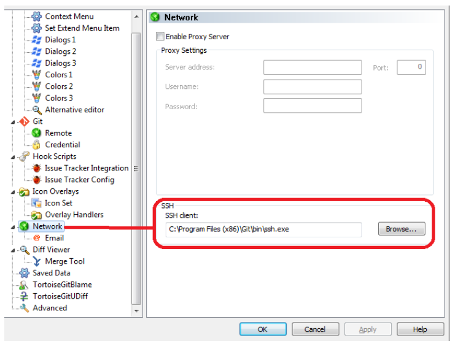

http://yournacoshost:8848/nacos/v1/cs/configs?dataId=security.conf&group=DEFAULT_GROUP&tenant=yournamespace
在找到文档之前一直尝试 namespace=yournamespace，这里有个概念不一致的地方，这里有叫tenant了
更多的 open-api 的接口在这里
设置 tortoise git 使用默认的 ssh.exe就没问题了

Unsupported docker v1 repository requestdocker pull xxx-docker-prod-local.artifactory-hz1.int.net.xxx.com/xxx-web:test
Trying to pull repository xxx-docker-prod-local.artifactory-hz1.int.net.xxx.com/xxx-web ...
Pulling repository xxx-docker-prod-local.artifactory-hz1.int.net.xxx.com/xxx-web
Error: Status 400 trying to pull repository onelab-web: "{\n \"errors\" : [ {\n \"status\" : 400,\n \"message\" : \"Unsupported docker v1 repository request for 'xxx-docker-prod-local'\"\n } ]\n}"
看似 Docker 版本的问题，其实不是，只是没有登录😂。 登录就好，docker login xxx-docker-prod-local.artifactory-hz1.int.net.xxx.com
使用 -i 选项： sed -i 's/STRING_TO_REPLACE/STRING_TO_REPLACE_IT/g' filename
lsof -i:8080
float: right 是不能用的，因为 float 不能用在 flex-level 的对象上。可以这么做：
.parent {
display: flex;
}
.child {
margin-left: auto;
order: 2;
}
<div class='parent'>
<div class='child'> ignore parent</div>
<div>another child</div>
</div>